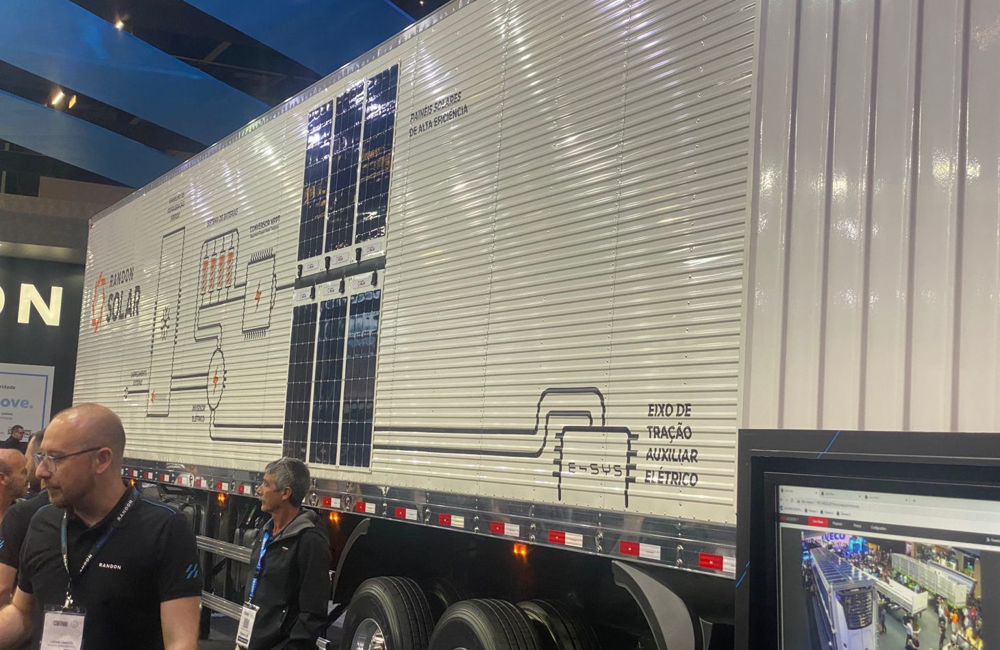

Caminhão elétrico produzido aqui na Serra gaúcha com foco nas entregas urbanas. Um caminhão autônomo para operar dentro da planta fabril e garantir a maior precisão ao movimentar os produtos. Duas tecnologias foram apresentadas durante a Fenatran 2022 — maior salão de transporte da América Latina que ocorreu de 7 a 11 de novembro em São Paulo — e que devem estar no horizonte dos empresários. Para o diretor de desenvolvimento de novos negócios da Divelog, Júnior Cavalca, as novidades em energias limpas foram os principais destaques da feira. Para o executivo, oito lançamentos merecem destaque:
- Caminhão elétrico de entregas da Arrow
- Caminhão Autônomo fruto da parceria da Mercedes-Benz com a Ypê
- Sistema de Carregamento da Pallets
- Caminhões elétricos da Volvo, Foton, Volkswagen e Daf
- Caminhões a Gás da Scania e Iveco
- Carreta frigorífica abastecida por placas solares
- Sistema elétrico de eixo da Randon
- E as campanhas Vez e Voz, tanto da Mercedes-Benz quanto do Setcesp
Com sotaque gaúcho
Para Cavalca, no lançamento do caminhão de entregas urbanas da Arrow, muitos pontos chamaram a atenção. “O primeiro deles, é claro, não poderia ser outro: um projeto 100% brasileiro, feito no Rio Grande do Sul, em um dos principais pólos metal mecânico do Brasil, que é Caxias do Sul, com indústrias mundialmente renomadas como Randon e Marcopolo”, ressalta. O executivo destaca que no Arrow, a plataforma foi pensada na facilidade e produtividade do operador — garantindo maior eficiência nas entregas urbanas.
“Todo o painel de comandos foi colocado ao lado direito do motorista, para que o mesmo tenha facilidade de sentar e se levantar do banco, dando mais mobilidade a cada parada. Outro fator interessante é a porta de saída ao lado direito do motorista, fazendo com que, além da agilidade, garanta a segurança do condutor, pois sempre estará ao lado da calçada”, detalha.
Além disso, o diretor da Divelog ainda chama a atenção para o espaço útil, que foi foi desenvolvido para garantir 20% a mais de capacidade de carga que uma van. “Além de um sistema de gaiola, onde a mesma sai do veículo, permitindo o embarque de outra gaiola, reduzindo o tempo de carregamento das encomendas”, observa.
A autonomia no Arrow gira, em torno de, 250 quilômetros de rodagem, semelhante aos demais caminhões elétricos. “O que assustou um pouco foi o preço, na média de R$ 750 mil. Mas como toda tecnologia, precisamos fazer o ROI, que não chegamos a fazer, mas acreditamos que tem viabilidade”, afirma, ao frisar que a Localiza já adquiriu 100 unidades para sua divisão de Locação de Pesados.
Autonomia dentro da planta
Outro projeto interessante, segundo o diretor de desenvolvimento de novos negócios da Divelog, Júnior Cavalca, é o caminhão autônomo nível 4 produzido pela Mercedes-Benz em parceria com a Ypê, fabricante de detergentes e afins. “Ele foi desenvolvido para operar dentro da planta fabril para encostar na doca de carregamento com maior precisão e assertividade, que o fator humano muitas vezes não é capaz. Ao todo, foram adquiridas quatro unidades pela Ypê”, conta.
De acordo com o executivo, a fabricante de detergentes buscou a garantia e segurança de um veículo autônomo, que consegue analisar e enxergar qualquer movimentação próxima a ele. “Com essa parceria, a Mercedes-Benz dá um passo importante em relação à questão de caminhões autônomos de menor porte no Brasil”, avalia.
O preço, mais uma vez, é o que pode assustar o empresário. Segundo Cavalca, o veículo produzido para a Ypê custou, cerca de, R$ 2,5 milhões por unidade. “Mas, de novo, precisamos fazer o ROI antes de tirar qualquer conclusão, pois um veículo autônomo pode produzir de 80% a 90% do tempo”, pondera.